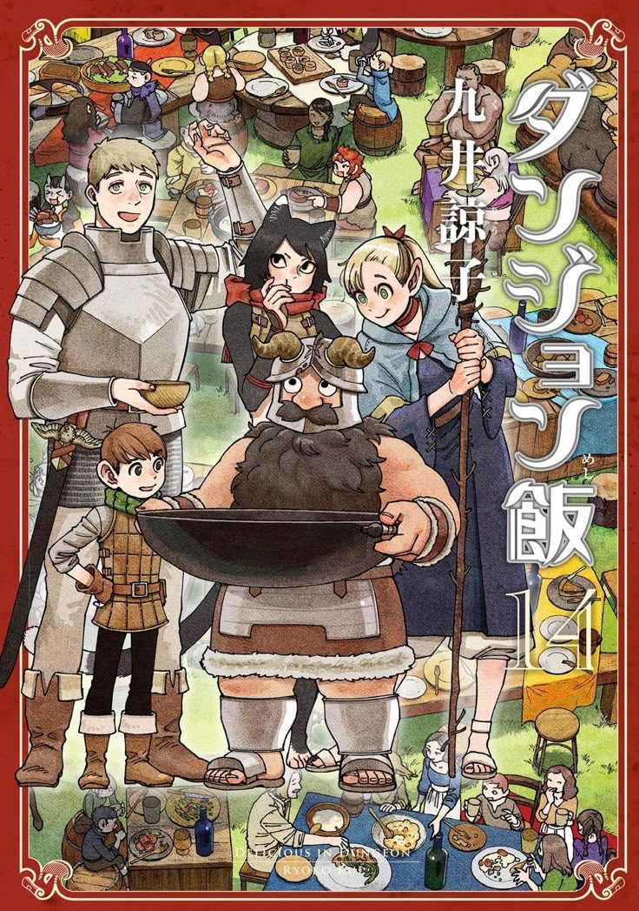

Delicious in Dungeon
Thể loại: Fantasy, Phiêu lưu
Mô tả:
Delicious in Dungeon là một bộ fantasy – phiêu lưu – hài hước – ẩm thực lấy bối cảnh trong hầm ngục đầy quái vật. Điểm độc đáo của truyện là ý tưởng nấu ăn từ chính quái vật trong dungeon, kết hợp giữa sinh tồn, khám phá và ẩm thực theo cách vừa lạ vừa hợp lý. Tác phẩm vừa nhẹ nhàng, vui vẻ, vừa xây dựng thế giới fantasy rất chi tiết và logic.
Tóm tắt cốt truyện:
Laios và đồng đội là một nhóm thám hiểm hầm ngục. Trong một lần thất bại, em gái của Laios bị rồng ăn mất, còn cả nhóm thì cạn kiệt lương thực. Không có tiền mua đồ ăn, họ buộc phải tiếp tục hành trình với một giải pháp “điên rồ” nhưng thiết thực: ăn quái vật trong dungeon để sinh tồn. Trên đường đi, nhóm gặp Senshi – một chiến binh lùn am hiểu cách chế biến quái vật thành món ăn. Từ đây, mỗi tầng hầm ngục không chỉ là thử thách sinh tồn mà còn trở thành một “nhà bếp” với đủ loại nguyên liệu kỳ lạ. Dưới lớp vỏ hài hước và ẩm thực, Delicious in Dungeon dần mở ra một câu chuyện về tình đồng đội, sự sống – cái chết trong dungeon và những bí mật ẩn sâu dưới hầm ngục.
Bình luận
Vui lòng đăng nhập để bình luận.